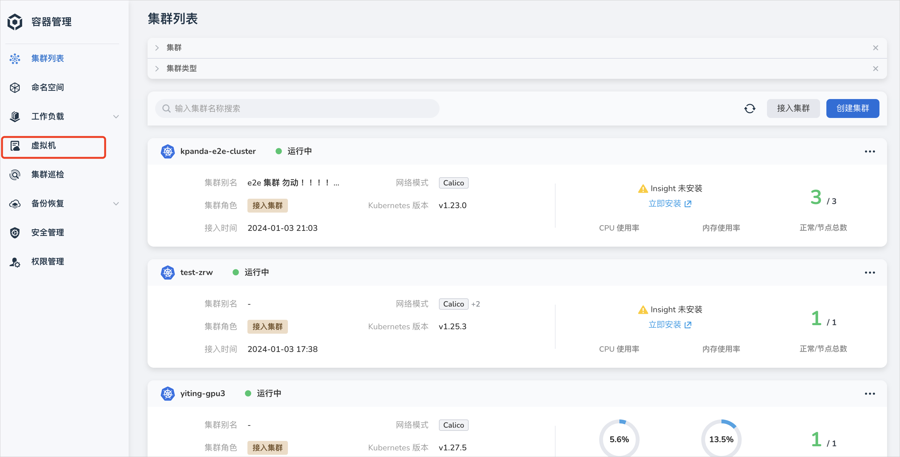
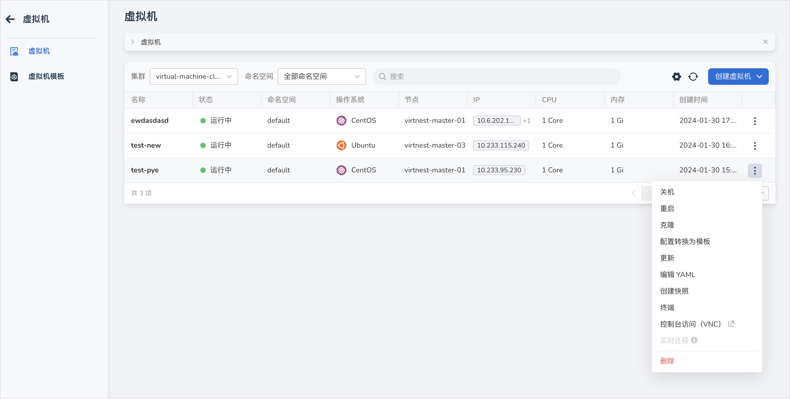
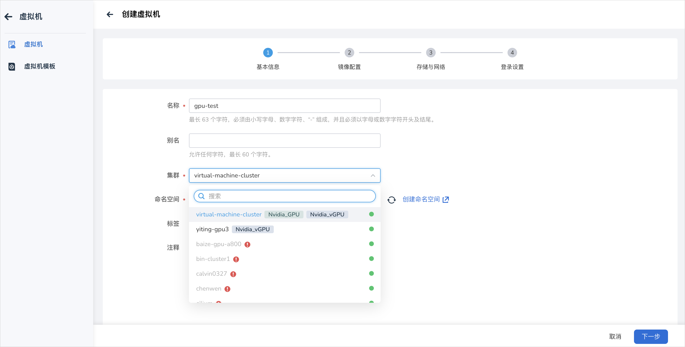
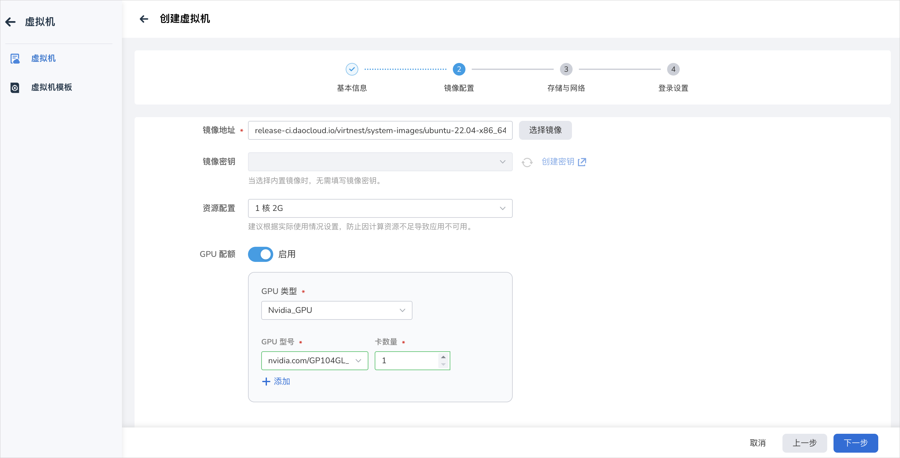
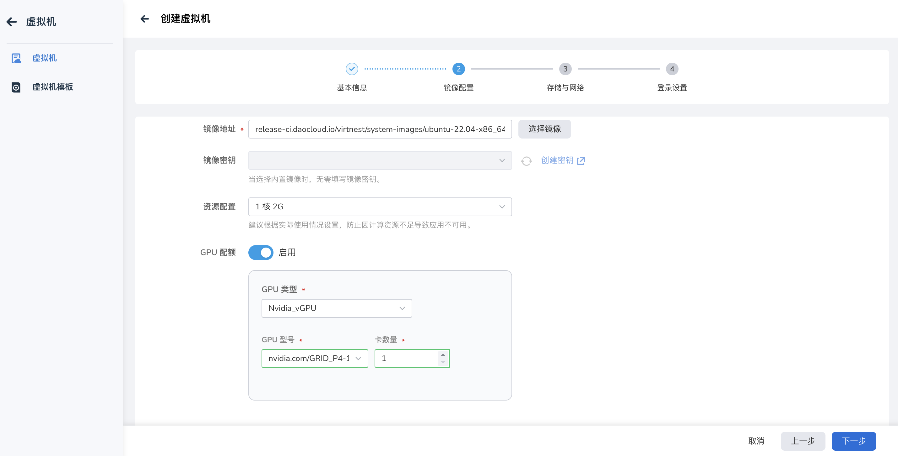
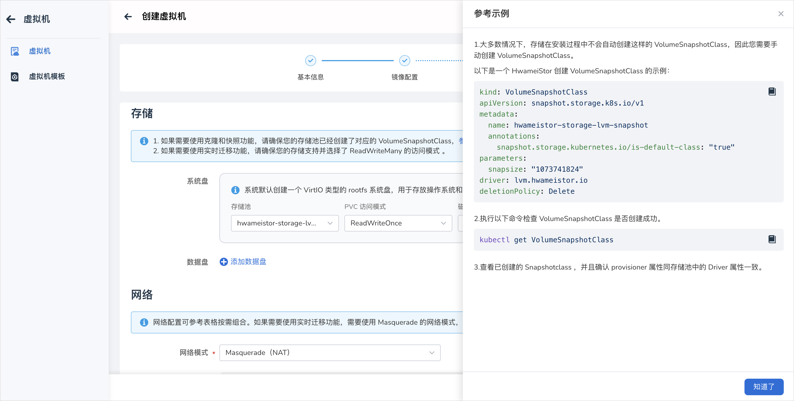
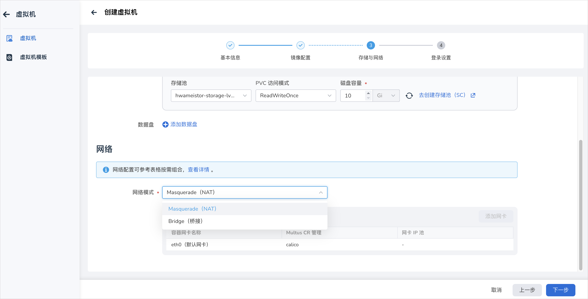
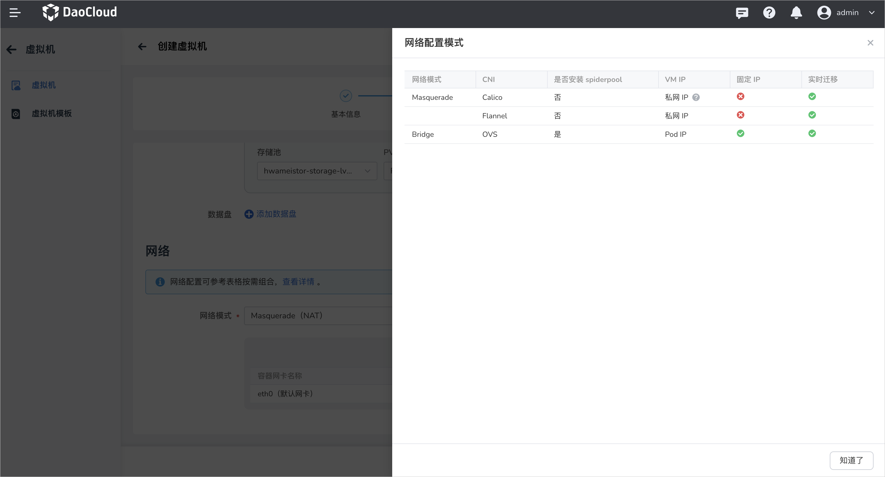
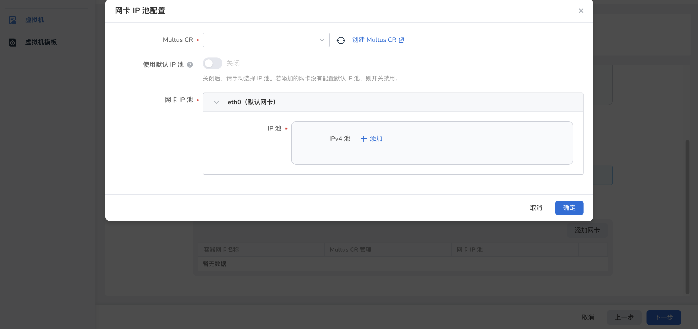

创建云主机¶
本文将介绍如何通过镜像和 YAML 文件两种方式创建云主机。
云主机基于 KubeVirt 技术将云主机作为云原生应用进行管理，与容器无缝地衔接在一起， 使用户能够轻松地部署云主机应用，享受与容器应用一致的丝滑体验。
前提条件¶
创建云主机之前，需要满足以下前提条件：
- 向用户机操作系统公开硬件辅助的虚拟化。
- 在指定集群安装 virtnest-agent，操作系统内核版本需要在 3.15 以上。
- 创建一个命名空间。
- 提前准备好镜像，平台内置三种镜像 (如下文所示)，如需制作镜像，可参考开源项目制作镜像。
- 进行网络配置时，若选择使用 Passt 网络模式，则需要升级至 0.4.0 及以上版本。
镜像创建¶
参考以下步骤，使用镜像创建一个云主机。
-
点击左侧导航栏上的 容器管理 ，然后点击 云主机 ，进入 云主机 页面。

-
在云主机列表页面，点击 创建云主机 -> 选择 通过镜像创建 。
-
进入镜像创建页面，依次填写基本信息、镜像配置、存储与网络、登录设置后，在页面右下角点击 确定 完成创建。
系统将自动返回云主机列表。点击列表右侧的 ┇ ，可以对云主机执行关机/开启、重启、克隆、更新、创建快照、控制台访问（VNC）、删除等操作。 克隆和快照能力依赖于存储池的选择。

基本信息¶
在 创建云主机 页面中，根据下表输入信息后，点击 下一步 。

- 名称：最多包含 63 个字符，只能包含小写字母、数字及分隔符（“-”），且必须以小写字母或数字开头及结尾。 同一命名空间内名称不得重复，而且名称在云主机创建好之后不可更改。
- 别名：允许任何字符，最长 60 个字符。
- 集群：选择将新建的云主机部署在哪个集群内，若有使用 GPU 能力的需求，则需要选择有 GPU/vGPU 卡的集群。
- 命名空间：选择将新建的云主机部署在哪个命名空间。 找不到所需的命名空间时可以根据页面提示去创建新的命名空间。
- 标签/注解：选择为云主机添加所需的标签/注解信息。
镜像配置¶
根据下表填写镜像相关信息后，点击 下一步
-
镜像来源：支持三种类型的来源。
- 镜像仓库类型：镜像存储在容器镜像仓库中，支持从镜像仓库中按需选择镜像；
- HTTP 类型：镜像存储于 HTTP 协议的文件服务器中，支持 HTTPS://和 HTTP://前缀；
- 对象存储（S3）：支持通过对象存储协议 (S3) 获取的云主机镜像，若是无需认证的对象存储文件，请使用 HTTP 来源。
-
以下是平台内置的镜像信息，包括操作系统和版本、镜像地址。同时也支持自定义云主机镜像。
操作系统 对应版本 镜像地址 CentOS CentOS 7.9 release-ci.daocloud.io/virtnest/system-images/centos-7.9-x86_64:v1 Ubuntu Ubuntu 22.04 release-ci.daocloud.io/virtnest/system-images/ubuntu-22.04-x86_64:v1 Debian Debian 12 release-ci.daocloud.io/virtnest/system-images/debian-12-x86_64:v1 -
镜像密钥：仅支持默认（Opaque）类型密钥，具体格式请参考创建密钥。
平台内置镜像存储在点火集群中，而点火集群的镜像仓库未加密，因此当选择内置镜像时，无需选择密钥。
Note
CPU 和内存的热加载配置要求：virtnest 的版本不低于 v0.10.0，并且 virtnest-agent 版本不低于 v0.7.0；支持实时迁移（确保 PVC 访问模式为 ReadWriteMany）。
-
资源配置：CPU 建议使用整数，若填写小数则会向上取整。支持 CPU、内存的热加载。
-
GPU 配置：启用 GPU 功能需要需要满足前提条件，具体可参考 云主机配置 GPU（Nvidia)。 云主机支持 Nvidia—GPU 和 Nvidia—vGPU 两种类型，选择所需类型后，需要选择对应的 GPU 型号和卡的数量。


存储与网络配置¶

-
存储：
-
存储和云主机的功能息息相关，主要是通过使用 Kubernetes 的持久卷和存储类，提供了灵活且可扩展的云主机存储能力。比如云主机镜像存储在 pvc 里，支持和其他数据一起克隆、快照等。
-
系统盘：系统默认创建一个 VirtIO 类型的 rootfs 系统盘，用于存放操作系统和数据。
-
数据盘：数据盘是云主机中用于存储用户数据、应用程序数据或其他非操作系统相关文件的存储设备。与系统盘相比，数据盘是非必选的，可以根据需要动态添加或移除。数据盘的容量也可以根据需求进行灵活配置。
-
默认使用块存储。如果需要使用克隆和快照功能，请确保您的存储池已经创建了对应的 VolumeSnapshotClass， 可以参考以下示例。如果需要使用实时迁移功能，请确保您的存储支持并选择了 ReadWriteMany 的访问模式 。
大多数情况下，存储在安装过程中不会自动创建这样的 VolumeSnapshotClass，因此您需要手动创建 VolumeSnapshotClass。 以下是一个 HwameiStor 创建 VolumeSnapshotClass 的示例：
-
执行以下命令检查 VolumeSnapshotClass 是否创建成功。
-
查看已创建的 Snapshotclass，并且确认 provisioner 属性同存储池中的 Driver 属性一致。
-
-
网络：
-
网络配置可以根据表格信息按需组合。
网络模式 CNI 是否安装 Spiderpool 网卡模式 固定 IP 实时迁移 Masquerade（NAT） Calico ❌ 单网卡 ❌ ✅ Cilium ❌ 单网卡 ❌ ✅ Flannel ❌ 单网卡 ❌ ✅ Bridge（桥接） OVS ✅ 多网卡 ✅ ✅ 
-
网络模式分为 Masquerade（NAT）和 Bridge（桥接），Bridge（桥接）模式需要安装了 Spiderpool 组件后方可使用。
- 默认选择 Masquerade（NAT）的网络模式，使用 eth0 默认网卡。
- 若集群内安装了 spiderpool 组件，则支持选择 Bridge（桥接）模式，Bridge（桥接）模式支持多网卡形式。

-
添加网卡
- Passt（直通）/Bridge（桥接）模式下支持手动添加网卡。点击 添加网卡 ，进行网卡 IP 池的配置。选择和网络模式匹配的 Multus CR，若没有则需要自行创建。
- 若打开 使用默认 IP 池 开关，则使用 multus CR 配置中的默认 IP 池。若关闭开关，则手动选择 IP 池。

-
登录设置¶
- 用户名/密码：可以通过用户名和密码登录至云主机。
- SSH：选择 SSH 登录方式时可为云主机绑定 SSH 密钥，用于日后登录云主机。
YAML 创建¶
除了通过镜像方式外，还可以通过 YAML 文件更快速地创建创建云主机。
进入云主机列表页，点击 通过 YAML 创建 按钮。
点击查看创建云主机的 YAML 示例
apiVersion: kubevirt.io/v1
kind: VirtualMachine
metadata:
name: demo
namespace: default
spec:
dataVolumeTemplates:
- metadata:
name: systemdisk-demo
namespace: default
spec:
pvc:
accessModes:
- ReadWriteOnce
resources:
requests:
storage: 10Gi
storageClassName: hwameistor-storage-lvm-hdd
source:
registry:
url: >-
docker://release-ci.daocloud.io/virtnest/system-images/ubuntu-22.04-x86_64:v1
runStrategy: Always
template:
spec:
architecture: amd64
domain:
cpu:
cores: 1
sockets: 1
threads: 1
devices:
disks:
- bootOrder: 1
disk:
bus: virtio
name: systemdisk-demo
- disk:
bus: virtio
name: cloudinitdisk
interfaces:
- masquerade: {}
name: default
machine:
type: q35
resources:
requests:
memory: 2Gi
networks:
- name: default
pod: {}
volumes:
- dataVolume:
name: systemdisk-demo
name: systemdisk-demo
- cloudInitNoCloud:
userDataBase64: >-
I2Nsb3VkLWNvbmZpZwpzc2hfcHdhdXRoOiB0cnVlCmRpc2FibGVfcm9vdDogZmFsc2UKY2hwYXNzd2Q6IHsibGlzdCI6ICJyb290OjEyMzQ1NiIsIGV4cGlyZTogRmFsc2V9CgoKcnVuY21kOgogIC0gc2VkIC1pICIvI1w/UGVybWl0Um9vdExvZ2luL3MvXi4qJC9QZXJtaXRSb290TG9naW4geWVzL2ciIC9ldGMvc3NoL3NzaGRfY29uZmlnCiAgLSBzeXN0ZW1jdGwgcmVzdGFydCBzc2guc2VydmljZQ==
name: cloudinitdisk